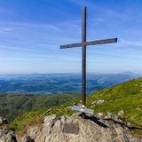

Walks
Loch Ard
This is a stunning area. If you continue straight ahead along the Main Street of Aberfoyle, and out past the village primary school and church, you will come to a left turn into The MILTON. This area has car parking areas where you can park the car and walk around the pricturesque Loch Ard and forest area.
If you continue and don't turn off for the milton you will eventually go through the village of Kinlochard and through again towards Inversnaid. On the way you will see a sign for Stonachlacher. This is the 'other' end of Loch Katrine, where you can walk, cycle and where there is a wonderful cafe for brunch, lunch or coffee and cake.
Inversnaid is on the banks of Loch Lomond and has beautiful walks along parts of the West HIghland Way and Rob Roys Cave.


Ben A'an
A small mountain (454 m) ideal for all the family, with great views of Loch Katrine, Loch Venacher and Loch Achray.

Directions to FK8 3HY: Head west on Main Street for 0.1 miles, then turn right onto Dukes Pass/A821. Continue along for approximately 5.8 miles, then turn right to stay on Dukes Pass another 0.2 miles, the Car Park will be on your right.
Ben Ledi
Ben Ledi is 879 m high, and is classified as a Corbett. It lies about 6.4 kilometres north-west of Callander, near the village of Kilmahog. It is situated in the Trossachs, an area often regarded as having some of the most romantic scenery in the Highlands.
Directions to FK17 8HF: Head east on Main Street for 0.8 miles, then take the first exit onto the A81 at the Rob Roy roundabout. Stay on the A81 for approximately 10 miles, then turn left onto the A48. After approx. 2.8 miles you will see a turn off for Strathyre Forest Cabins. Turn here, cross over the bridge, the parking area is on the left.

Ben Venue
The name Ben Venue is derived from the Scottish Gaelic words meaning "the miniature mountain". The summit stands at 729 m and lies approximately 2 kilometres south-west of the pier at the southern end of Loch Katrine.

Directions to FK17 8HZ: Head west on Main Street for 0.1 miles, then turn right onto Dukes Pass/A821. Continue along for approximately 5.6 miles, the Car Park will be on your left.